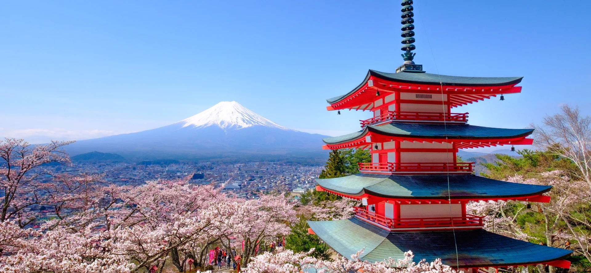
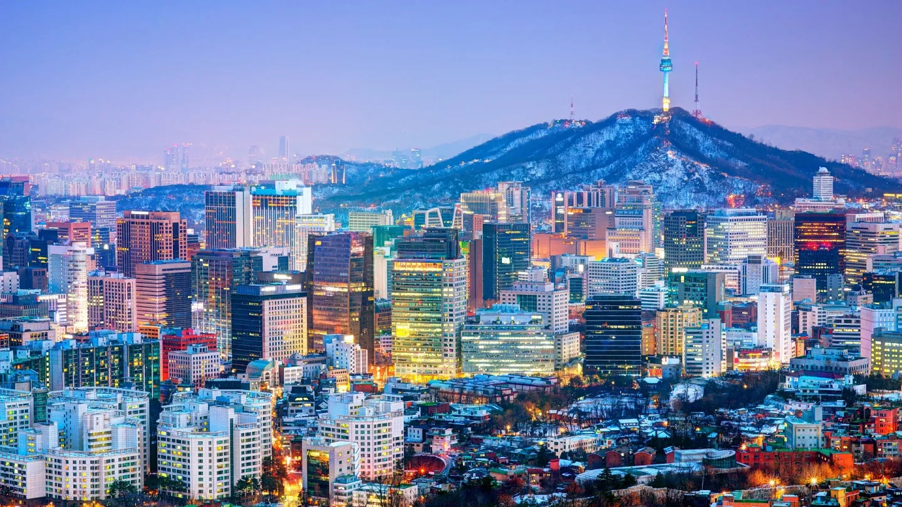

My Top 5 Favorite Places
1. Japan

Japan's colors, views, and traditions have captivated tourists for thousands of years, owing to one of the world's longest and most complicated histories. As a country, Japan is a fascinating study of old-meets-new; it adheres to its traditions and roots while also allowing for innovation and new trends. Japan is famous for everything from onsen hot springs and kabuki baths (which date back to the sixth and sixteenth centuries, respectively) to all-night neon-lit dance parties, anime, and sushi boat restaurants, which are certainly more modern.
2. Seoul

Seoul is South Korea's pulsing center, known for its technology, medieval palaces, and K-Pop scene. Seoul is a modern metropolis with a tradition at its heart, with a population of 9.7 million people, making it twice as packed as New York. It's a lively city that likes to stay up late. It's packed with classic eateries and soaring buildings. There are plenty of locations to get away from the throng, including the city's own mountain and best observation point, Inwangsan. Seoul's humid subtropical climate makes it a nice place to visit in the spring, summer, and autumn, while temperatures can drop below freezing in the winter. During the summer, there are plenty of lush parks to cool off in.
3. New York

New York is a city full of attractions, but some of the most interesting ones will almost certainly be the ones you happen across on your route somewhere else. Whatever you're looking for can be found in New York. Just don't try to do it all in one trip.
4. France

Today, France is one of the most advanced countries in the world, and it is a European leader. Since 1958, it has built a presidential democracy that has been impervious to the instabilities that have plagued previous parliamentary democracies. In recent years, its reconciliation and collaboration with Germany have been critical to Europe's economic unification, notably the introduction of the euro in January 1999. France is currently at the forefront of European states seeking to capitalize on the momentum of monetary union in order to accelerate the establishment of a more cohesive and capable European defense and security apparatus. With 89.4 million foreign tourists in 2018, France is the most visited country in the world.
5. Iceland

Iceland is an island country in the North Atlantic Ocean. Iceland, which lies on the continually active tectonic boundary between North America and Europe, is a nation of stark differences in temperature, topography, and culture. Sparkling glaciers, such as Europe's largest, Vatna Glacier (Vatnajökull), lie across its ruggedly beautiful mountain ranges; abundant hot geysers provide heat for many of the country's homes and buildings and allow for year-round hothouse agriculture; and the offshore Gulf Stream provides a surprisingly mild climate for what is one of the world's northernmost inhabited places.